Nombre del laboratorio: File Path Traversal Simple Case
Nivel del laboratorio: Apprentice
Tipo de explotación: Se trata de una vulnerabilidad Path Traversal (también llamada Directory Traversal o Traversal de Directorios) específicamente una variante de lectura arbitraria de archivos.
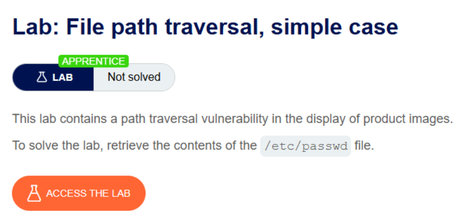
Objetivo del Laboratorio
El objetivo de este laboratorio es poder leer un archivo que se encuentra completamente fuera del directorio determinado por la aplicación, es una prueba de concepto clásica, ya que es legible por cualquier usuario.
Explicación Técnica de la Vulnerabilidad
La página nos muestra un catálogo en donde se presentan diferentes imágenes. Estas imágenes tienen un endpoint, que es donde se presenta la vulnerabilidad. El endpoint recibe el nombre del archivo a través de un parámetro controlado por el usuario y se utiliza directamente para construir la ruta del archivo que será leído en el sistema de archivos del servidor, sin aplicar ningún tipo de validación o normalización previa.
GET /image?filename=218.png
El problema surge porque no cuenta con una validación, y la aplicación confía ciegamente en que el valor de filename corresponderá siempre a un nombre de archivo simple y legítimo dentro del directorio de imágenes.
Dado que los sistemas operativos interpretan la secuencia ../ como una instrucción para retroceder un nivel de jerarquía de directorios, un atacante puede manipular fácilmente el parámetro para incluir múltiples secuencias de este tipo y así "escapar" del directorio, alcanzando la raíz del sistema de archivos y navegando hacia cualquier otro archivo del servidor.
Procedimiento Paso a Paso
Paso 1: Búsqueda e inicio de Burp Suite
Como primer paso, tenemos que buscar el sistema BurpSuite, en este caso estamos utilizando el BurpSuite Community Edition. Damos clic e iniciamos el sistema.
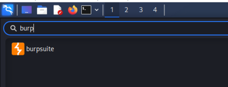
Paso 2: Creación de proyecto temporal
Una vez iniciado el sistema, se muestra en pantalla para poder inicializar un nuevo proyecto, en esta ocasión estaremos utilizando la opción de Proyecto temporal en memoria, damos siguiente.
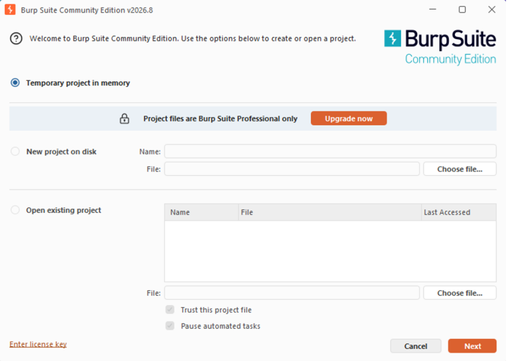
Paso 3: Configuración por defecto
Continuamos y en la siguiente página se muestra la configuración con la que estaremos trabajando, dejaremos la configuración que maneja por default y damos clic en Start Burp.
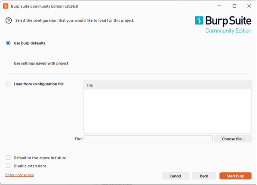
Paso 4: Ingreso al Dashboard y Proxy
Después de haber ingresado, en la pestaña actual se muestra el dashboard que es la página principal, en este momento nosotros debemos de buscar el apartado de proxy, para ahora dar clic e irnos a esa pestaña.
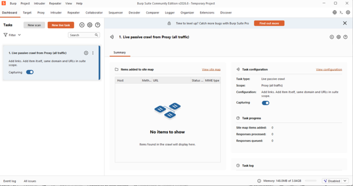
Paso 5: Activación de Intercept y Open Browser
Ya estando en Proxy, podemos observar que hay un botón que dice Intercept off, debemos de dar clic ahí para encenderlo, también podemos observar que en medio de la pestaña aparece un botón en naranja que dice Open Browser, también debemos de dar clic en ese botón para poder abrir el navegador e iniciar nuestra práctica.
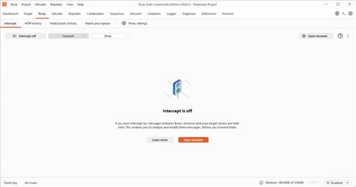
Paso 6: Acceso a la URL del laboratorio
Ya dentro del navegador tenemos que ingresar el URL que nos sale cuando accedimos al laboratorio.
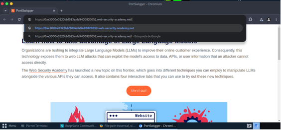
Paso 7: Envío a Repeater
Una vez cargada la página debemos de dar clic en Forward para que se puedan cargar las diferentes acciones de la página, en cuanto nos salga un endpoint que diga GET /image?filename=18.jpg HTTP/2, seleccionamos esa instrucción y damos clic derecho, en donde se nos mostraran diferentes opciones, daremos clic en la opción de Send to Repeater, para después irnos a la pestaña de Repeater.
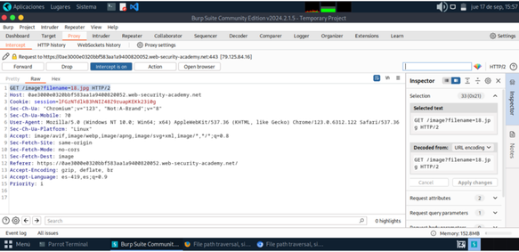
Paso 8: Modificación de la solicitud
Una vez en la pestaña de Repeater debemos de modificar el endpoint, debemos de reemplazar el nombre del filename por lo siguiente: ../../../../etc/passwd esto para poder movernos al directorio root y poder visualizar la información que contiene ese directorio.
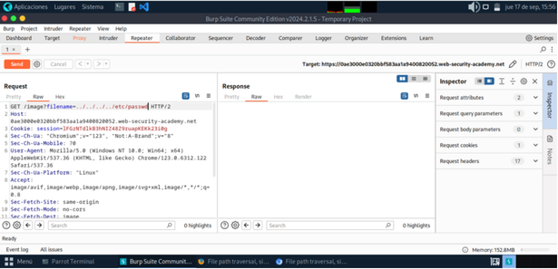
Paso 9: Ejecución del ataque con Send
Para eso debemos de dar clic en Send, para poder realizar esta acción y enviar la solicitud modificada.
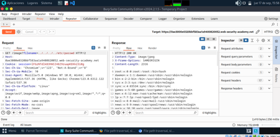
Paso 10: Visualización de resultados en Response
Después de haber mandado la instrucción, en el apartado de Response se muestra el contenido del directorio del sistema. Una vez que podamos observar esta información, la práctica de este laboratorio está terminada y podemos comprobar que la completamos al visualizar LAB Solved en la esquina superior de la página web.
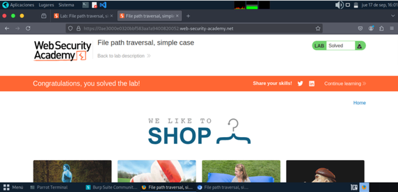
Explicación del Payload
Payload utilizado:../../../../etc/passwd
Componente
Función
../
Cada ocurrencia indica al sistema operativo "sube un nivel en la jerarquía de directorios".
../../../../
Retrocede múltiples niveles desde el directorio base de imágenes hasta alcanzar la raíz del sistema de archivos (/).
etc/passwd
Una vez en la raíz, especifica la ruta relativa al archivo objetivo del sistema.
Mitigación Recomendada
1. Validación mediante lista blanca (Allow-list)
En lugar de aceptar cualquier nombre de archivo arbitrario, validar estrictamente la entrada contra una lista de archivos o patrones permitidos explícitamente. Esta es la mitigación más robusta, ya que no depende de detectar patrones maliciosos, sino de permitir únicamente lo seguro.
2. Uso de identificadores indirectos
Reemplazar el nombre de archivo real por un identificador (ID numérico o UUID) que se mapee internamente en el servidor de forma segura, evitando que el usuario controle rutas del sistema de archivos.